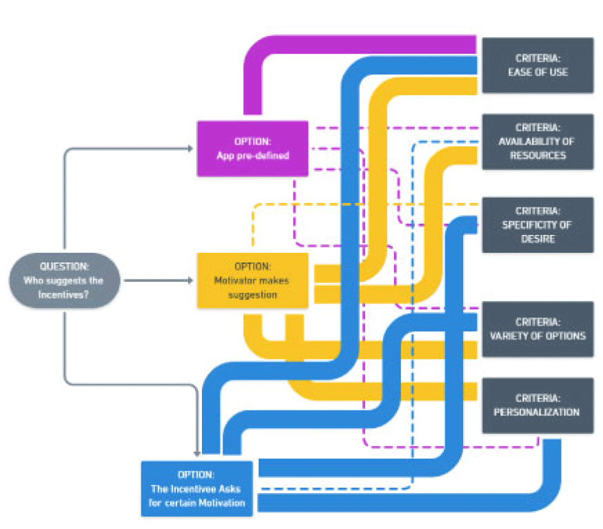
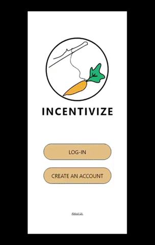

VR Problem
Many people live in areas where there aren’t many opportunities to buy fresh fruits and vegetables. As a volunteer at my community garden, I’ve loved teaching people how to grow food in their own backyard. Growing food for people seems an incredibly difficult task and often times intimidating for those new to gardening. I knew that teaching gardening skills would benefit people in a few different ways but mainly to teach without any repercussions of failure or losing time and money in the process. A VR application that teaches gardening skills would be meaningful for teaching people how to grow food.
Design Process
Design Process
My team’s first step for both AR and VR was to ideate how we may approach our chosen problem in terms of a physical prototype- we used clay models of the objects in our scene and set it as a first person experience as most VR applications are. After nailing down the interactions you can view in the gif below. This helped us understand positioning and interaction opportunities.

Digital Tool choice
In choosing my tool, I wanted a tool that was adaptable and did not intimidate me as a designer. I initially attempted to work within the constraints of unity because my development skills were a bit rusty but found the program slow and strenuous to use on my computer. I differed to my second choice, A-Frame. This was my first time using the program, I initially used glitch to write my code and run it in VR on my google cardboard headset which turned out to be a great workflow for me. You can see the gif below for an example on what my first iteration looked like:

I learned about AFRAME as a tool and how to place 3D assets in a scene which proved difficult because they were all created in various sizings and automatic positioning. The placement and interaction of the water jug and pitchfork was an uphill battle but ended up in our final design.
Final Design
Our ultimate solution includes an interaction for tilling soil, watering the soil, and picking the fruits of our digitally grown labor. There are gaze interactions and click interactions involved throughout the solution. Anything that can be interacted with will get larger if gazed at to signify interaction. There’s additionally lighting and sound that provides users with a deeper sense of immersion.
Further Explorations
If we had more time with this prototype, I would’ve loved the opportunity to work on informational pop ups and audio. Although there is scenery audio for immersion purposes, there is definitely a lack of education and teaching users how to actually garden.

Paper Prototype
I first had to sketch out all of the interactions in my notebook and then used paper and a thick folder to create the physical prototype. The folder had a slit in the side so that I could run the paper through so the screen was able to be changed. I sketched quickly but spent my time on thinking about the interaction layout.

Wireframe/ Mid Fidelity Prototype
According to user feedback during my testing, the content was “too busy” at this stage. From these critiques I knew that I needed to cut down on necessary content.
I also learned that the icon on the homepage was too big. I designed this as if it were going to be my final prototype but decided to iterate my design one final time because although I was happy with the interactions, I just wasn’t thrilled with the overall look and feel.
At this stage it was confirmed that the incentive carrot made sense as the ask for incentives button, which was validating!

High Fidelity Prototype
I didn’t change any functionality from the MF to HF, but did move a few buttons around (Edit and Log Out) and I cut down the amount of information underneath posts on the Motivation Center. These decisions were based on user feedback. These main changes were all aesthetic choices and an update on the boring look and feel that I had in my mid-fidelity version.
Further Exploration
I set out to embed motivation and incentivization into my product as it is the backbone of the app. I knew that I could do this by challenging the idea that motivation is something that’s self-directed. I wanted to promote group based and community driven motivation so that there could be a balance between work and play for students, but I can also see this transferring to work environments and sports teams/fitness clubs as well.